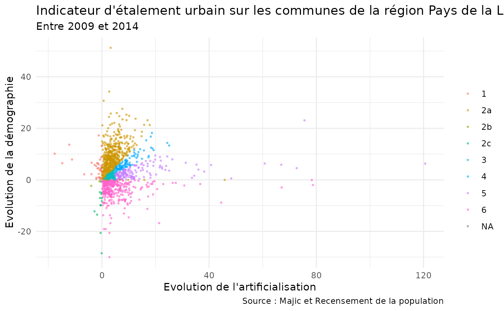

Exercices parcours R module 2 : datapréparation
Source:vignettes/m02_exercices_module_datapreparation_R.Rmd
m02_exercices_module_datapreparation_R.Rmd
library(savoirfR)
#> Warning: replacing previous import 'stats::filter' by 'dplyr::filter' when
#> loading 'savoirfR'Exercice 1 : Les données mensuelles sitadel (chap 5.5.2)
À partir du fichier sitadel de février 2017 (ROES_201702.xls), produire un dataframe ‘sit_pdl_ind’ contenant pour la région Pays-de-la-Loire (code région 52), pour chaque mois et pour les logements individuels (définis par la somme des logements individuels purs et individuels groupés : i_AUT = ip_AUT + ig_AUT) :
- le cumul des autorisations sur 12 mois glissants
(i_AUT_cum12),
- le taux d’évolution du cumul sur 12 mois (i_AUT_cum_evo, en
%),
- la part de ce cumul dans celui de l’ensemble des logements autorisés (log_AUT), en pourcentage.
Résultat attendu :
solution sans le pipe (apercu des premières lignes)
%>%
#> # A tibble: 6 × 12
#> date REG log_AUT ip_AUT ig_AUT colres_AUT i_AUT i_AUT_cum12
#> <chr> <chr> <dbl> <dbl> <dbl> <dbl> <dbl> <dbl>
#> 1 200001 52 1789 1266 245 278 1511 NA
#> 2 200002 52 2022 1529 175 318 1704 NA
#> 3 200003 52 2270 1466 205 599 1671 NA
#> 4 200004 52 2040 1237 162 641 1399 NA
#> 5 200005 52 2361 1357 357 647 1714 NA
#> 6 200006 52 2504 1436 250 818 1686 NA
#> # ℹ 4 more variables: i_AUT_cum12_lag12 <dbl>, i_AUT_cum_evo <dbl>,
#> # log_AUT_cum12 <dbl>, part_i_AU <dbl>solution avec le pipe (apercu des premières lignes)
%>%
#> # A tibble: 6 × 12
#> date REG log_AUT ip_AUT ig_AUT colres_AUT i_AUT i_AUT_cum12
#> <chr> <chr> <dbl> <dbl> <dbl> <dbl> <dbl> <dbl>
#> 1 200001 52 1789 1266 245 278 1511 NA
#> 2 200002 52 2022 1529 175 318 1704 NA
#> 3 200003 52 2270 1466 205 599 1671 NA
#> 4 200004 52 2040 1237 162 641 1399 NA
#> 5 200005 52 2361 1357 357 647 1714 NA
#> 6 200006 52 2504 1436 250 818 1686 NA
#> # ℹ 4 more variables: i_AUT_cum12_lag12 <dbl>, i_AUT_cum_evo <dbl>,
#> # log_AUT_cum12 <dbl>, part_i_AU <dbl>Aperçu de la solution 
Exercice 2 (chap 5.5.3)
Convertir les colonnes de la table exercice au format
date (quand c’est pertinent). La table exercice est issue
de FormationPreparationDesDonnees.RData.
Résultat attendu :
#> Rows: 153,497
#> Columns: 22
#> $ code_analyse <int> 5186581, 280131, 1576225, 799894, 472800, 27671…
#> $ code_laboratoire <dbl> NA, 292, NA, NA, 292, NA, NA, NA, NA, NA, NA, N…
#> $ code_prelevement <int> 37593, 7715, 15517, 9566, 8332, 26792, 35625, 1…
#> $ code_parametre <dbl> 1216, 1668, 1185, 1217, 1907, 1945, 1673, 1234,…
#> $ code_fraction_analysee <int> 23, 23, 23, 23, 23, 23, 23, 23, 23, 23, 23, 23,…
#> $ resultat_analyse <dbl> 0.007, 0.050, 0.040, 0.050, 0.260, 0.020, 0.010…
#> $ code_remarque <int> 10, 2, 2, 2, 1, 10, 10, 10, 10, 10, 10, 10, 2, …
#> $ limite_detection <dbl> 0, 0, 0, 0, 0, 0, 0, 0, 0, 0, 0, 0, 0, 0, 0, 0,…
#> $ limite_quantification <dbl> 0, 0, 0, 0, 0, 0, 0, 0, 0, 0, 0, 0, 0, 0, 0, 0,…
#> $ code_intervenant <fct> NA, 104, NA, NA, 104, NA, NA, 53, NA, 44, 49, 4…
#> $ code_reseau <fct> OSUR, OSUR, FREDON, OSUR, OSUR, OSUR, OSUR, ARS…
#> $ code_station <chr> "04153800", "04130000", "04132500", "04214000",…
#> $ date_prelevement <date> 2014-09-16, 2003-08-05, 2008-09-01, 2007-05-02…
#> $ code_support <int> NA, 3, NA, NA, 3, NA, NA, 3, NA, 3, 3, 3, NA, N…
#> $ libelle_station <chr> "MOZEE à CHANTONNAY", "MAYENNE à DAON", "MAYENN…
#> $ date_creation <date> 1900-01-01, 1900-01-01, 1900-01-01, 1900-01-01…
#> $ source <chr> "AELB", "AELB", "AELB", "AELB", "AELB", "AELB",…
#> $ code_masse_eau <chr> "GR1950", "GR0460c", "GR0460c", "GR0121", "GR04…
#> $ code_entite_hydro <chr> "N3036200", "M---0090", "M---0090", "J78-0300",…
#> $ code_troncon_hydro <chr> "N3036200", "M3620090", "M3910090", "J7800300",…
#> $ code_commune <chr> "85051", "53089", "49214", "44036", "53017", "5…
#> $ date_formatee <chr> "16/09/2014", "05/08/2003", "01/09/2008", "02/0…Exercice 3 (chap 5.9.1)
A partir des données “sitadel” chargées dans l’exercice 1, effectuer
les opérations suivantes en utilisant l’opérateur %>%
:
- effectuer les mêmes calculs que ceux réalisés sur la région 52, mais
sur chacune des régions –> à stocker dans ‘sit_ind’
- calculer les agrégations par année civile pour chacune des régions, puis leur taux d’évolution d’une année sur l’autre (exemple : (val2015-val2014)/val2014) –> à stocker dans ‘sit_annuel’
Résultat attendu pour sit_ind :
#> # A tibble: 5,356 × 12
#> date REG log_AUT ip_AUT ig_AUT colres_AUT i_AUT i_AUT_cum12
#> <chr> <chr> <dbl> <dbl> <dbl> <dbl> <dbl> <dbl>
#> 1 200001 01 440 194 12 234 206 NA
#> 2 200001 02 372 189 14 169 203 NA
#> 3 200001 03 172 25 3 144 28 NA
#> 4 200001 04 473 325 84 64 409 NA
#> 5 200001 11 3029 754 318 1957 1072 NA
#> 6 200001 21 547 274 94 179 368 NA
#> 7 200001 22 475 328 16 131 344 NA
#> 8 200001 23 569 445 35 89 480 NA
#> 9 200001 24 1057 714 88 255 802 NA
#> 10 200001 25 708 410 206 92 616 NA
#> # ℹ 5,346 more rows
#> # ℹ 4 more variables: i_AUT_cum12_lag12 <dbl>, i_AUT_cum_evo <dbl>,
#> # log_AUT_cum12 <dbl>, part_i_AU <dbl>Résultat attendu pour sit_annuel :
#> # A tibble: 468 × 10
#> REG annee log_AUT ip_AUT ig_AUT colres_AUT evol_an_log_AUT evol_an_ip_AUT
#> <chr> <chr> <dbl> <dbl> <dbl> <dbl> <dbl> <dbl>
#> 1 01 2000 6625 2776 674 3175 NA NA
#> 2 02 2000 3956 1805 270 1881 NA NA
#> 3 03 2000 1501 363 363 775 NA NA
#> 4 04 2000 9749 4580 1246 3923 NA NA
#> 5 11 2000 44443 8843 4836 30764 NA NA
#> 6 21 2000 5519 3164 890 1465 NA NA
#> 7 22 2000 6363 3819 721 1823 NA NA
#> 8 23 2000 8803 4712 1256 2835 NA NA
#> 9 24 2000 13386 7770 1867 3749 NA NA
#> 10 25 2000 8678 5288 1401 1989 NA NA
#> # ℹ 458 more rows
#> # ℹ 2 more variables: evol_an_ig_AUT <dbl>, evol_an_colres_AUT <dbl>Exercice 4 (chap 5.9.2)
Sur les données FormationPreparationDesDonnees.RData,
table exercice :
1/ calculer le taux de quantification pour chaque molécule et chacune
des années : chaque molécule est identifiée par son
code_parametre, le taux de quantification est le nombre de
fois qu’une molécule est retrouvée (càd si code_remarque =
1) sur le nombre de fois où elle a été cherchée (càd si
code_remarque = 1, 2, 7 ou 10). Pour cela :
- créer la variable
annee - créer la variable de comptage des présences pour chaque analyse (1=présent, 0=absent)
- créer la variable de comptage des recherches pour chaque analyse (1=recherchée, 0=non recherchée)
- pour chaque combinaison
anneexcode_parametre, calculer le taux de quantification
2/ trouver pour chaque station, sur l’année 2016, le prélèvement pour lequel la concentration cumulée, toutes substances confondues, est la plus élevée (~ le prélèvement le plus pollué). Pour cela :
- filtrer les concentrations quantifiées
(
code_remarque=1) et l’année 2016 - sommer les concentrations (
resultat_analyse) par combinaisoncode_stationxcode_prelevement - ne conserver que le prélèvement avec le concentration maximale
Résultats attendus :
Résultat attendu pour le taux de quantification par molécule et année :
#> # A tibble: 6,538 × 3
#> annee code_parametre taux_quantif
#> <dbl> <dbl> <dbl>
#> 1 1991 1129 0
#> 2 1991 1130 0
#> 3 1991 1176 0
#> 4 1991 1199 0
#> 5 1991 1212 0
#> 6 1991 1259 0
#> 7 1991 1263 100
#> 8 1991 1267 0
#> 9 1992 1101 0
#> 10 1992 1107 100
#> # ℹ 6,528 more rowsRésultat attendu pour prélèvement le plus pollué de chaque station en 2016 :
#> # A tibble: 176 × 3
#> libelle_station code_prelevement concentration_cumulee
#> <chr> <int> <dbl>
#> 1 ANGLE GUIGNARD-RETENUE 43003 0.04
#> 2 ANXURE À SAINT-GERMAIN-D'ANXURE 42228 0.02
#> 3 APREMONT-RETENUE 42895 0.035
#> 4 ARAIZE à CHATELAIS 41451 0.006
#> 5 ARON à MOULAY 41359 0.008
#> 6 AUBANCE À LOUERRE 41571 0.08
#> 7 AUBANCE à MURS-ERIGNE 41542 0.317
#> 8 AUBANCE à SAINT-SATURNIN-SUR-LOIRE 41584 0.167
#> 9 AUTHION à LES PONTS-DE-CE 42532 0.27
#> 10 AUTISE À SAINT-HILAIRE-DES-LOGES 41998 0.048
#> # ℹ 166 more rowsExercice 5 (chap 6.1)

Dans les données FormationPreparationDesDonnees.RData,
chaque analyse est effectuée à partir d’un prélèvement, lui-même réalisé
au niveau d’une station.
Reconstituer le dataframe
exercicequi rassemble les données contenues dans les tablesanalyse,prelevementetstationgrâce à des jointures. Il faut partir de la tableanalyseet faire des jointurescalculer le nombre d’analyses réalisées sur des molécules (identifiables par leur
code_parametre) et décrites dans le référentielparametre;produire une liste des
code_parametreassociés à des analyses mais absents du référentiel ;produire une table des analyses “orphelines”, c’est-à-dire qui ne correspondent à aucun prélèvement.
Résultats attendus :
Résultat attendu pour les jointures entre analayse,
prelevement et station
#> Rows: 153,497
#> Columns: 22
#> $ code_analyse <int> 5186581, 280131, 1576225, 799894, 472800, 27671…
#> $ code_laboratoire <dbl> NA, 292, NA, NA, 292, NA, NA, NA, NA, NA, NA, N…
#> $ code_prelevement <int> 37593, 7715, 15517, 9566, 8332, 26792, 35625, 1…
#> $ code_parametre <dbl> 1216, 1668, 1185, 1217, 1907, 1945, 1673, 1234,…
#> $ code_fraction_analysee <int> 23, 23, 23, 23, 23, 23, 23, 23, 23, 23, 23, 23,…
#> $ resultat_analyse <dbl> 0.007, 0.050, 0.040, 0.050, 0.260, 0.020, 0.010…
#> $ code_remarque <int> 10, 2, 2, 2, 1, 10, 10, 10, 10, 10, 10, 10, 2, …
#> $ limite_detection <dbl> 0, 0, 0, 0, 0, 0, 0, 0, 0, 0, 0, 0, 0, 0, 0, 0,…
#> $ limite_quantification <dbl> 0, 0, 0, 0, 0, 0, 0, 0, 0, 0, 0, 0, 0, 0, 0, 0,…
#> $ code_intervenant <fct> NA, 104, NA, NA, 104, NA, NA, 53, NA, 44, 49, 4…
#> $ code_reseau <fct> OSUR, OSUR, FREDON, OSUR, OSUR, OSUR, OSUR, ARS…
#> $ code_station <chr> "04153800", "04130000", "04132500", "04214000",…
#> $ date_prelevement <chr> "2014-09-16", "2003-08-05", "2008-09-01", "2007…
#> $ code_support <int> NA, 3, NA, NA, 3, NA, NA, 3, NA, 3, 3, 3, NA, N…
#> $ libelle_station <chr> "MOZEE à CHANTONNAY", "MAYENNE à DAON", "MAYENN…
#> $ date_creation <chr> "1900-01-01", "1900-01-01", "1900-01-01", "1900…
#> $ source <chr> "AELB", "AELB", "AELB", "AELB", "AELB", "AELB",…
#> $ code_masse_eau <chr> "GR1950", "GR0460c", "GR0460c", "GR0121", "GR04…
#> $ code_entite_hydro <chr> "N3036200", "M---0090", "M---0090", "J78-0300",…
#> $ code_troncon_hydro <chr> "N3036200", "M3620090", "M3910090", "J7800300",…
#> $ code_commune <chr> "85051", "53089", "49214", "44036", "53017", "5…
#> $ annee <dbl> 2014, 2003, 2008, 2007, 2005, 2006, 2013, 2009,…Résultat attendu pour le nombre d’analyses réalisées sur des
molécules (code_parametre) présentes dans le référentiel
parametre :
#> [1] 194382Résultat attendu pour la liste des code_parametre
associés à des analyses mais absents du référentiel :
#> [1] 1261 1206 1673 1234 1686 1757 1666 1149 1865 1888 1225 1830
#> [13] 1506 1136 1218 1199 1664 7097 1913 1680 5526 1235 1533 1266
#> [25] 1155 1877 1215 1209 1126 1208 1189 9052 1526 1256 1903 1905
#> [37] 1866 1895 1171 1130 2027 2046 1104 1233 1193 2057 1890 1173
#> [49] 1148 1150 1103 2737 2047 1490 1464 1101 1254 1698 1540 1870
#> [61] 2912 1287 1159 1142 1257 1213 1812 1700 1194 1432 2546 6260
#> [73] 1289 1697 5537 1694 2074 1699 1951 2751 6398 1806 1228 2678
#> [85] 1814 1832 2806 2015 1809 1682 1742 3159 2807 1214 1402 1670
#> [97] 5921 0 1210 1276 1153 2028 1094 1968 6483 1124 1119 1891
#> [109] 1127 1139 1954 1503 1523 1887 1147 1522 1743 1972 1966 1763
#> [121] 2012 2976 1259 1701 1102 1231 1940 1238 2024 5416 1860 5760
#> [133] 1501 1942 6824 1280 1502 2951 1112 1975 1943 1336 1711 1716
#> [145] 1930 1764 1655 1283 1615 1976 1953 7057 2010 1805 2950 2930
#> [157] 1546 2565 5488 1880 1774 1684 1525 1959 1616 1592 1587 2769
#> [169] 2545 2750 2069 5638 2664 1702 1720 1538 1636 2984 5581 2913
#> [181] 6261 6856 1091 1875 7500 1090 1649 1614 1548 7345 2872 2987
#> [193] 1250 12143 2021 1274 1629 1465 2609 3209 1642 2748 1643 2744
#> [205] 1969 1869 7342 1591 1251 1647 2749 1116 2986 2066 1469 1388
#> [217] 2081 1245 2889 5545 1628 1648 2919 1595 1613 1957 1590 1955
#> [229] 1089 2929 2536 1160 3283 1282 1387 1458 7522 1241 3160 2732
#> [241] 1275 1651 1382 1106 1115 12098 1588 1468 1612 2916 1624 1594
#> [253] 12099 1032 1627 2733 1243 2734 1921 1273 2915 6384 1272 1117
#> [265] 1278 1653 1731 1586 1396 2887 1286 2770 5499 1305 1471 1650
#> [277] 1625 1645 1593 2868 1486 1730 1161 7150 2590 2032 1626 1589
#> [289] 1249 1386 1242 2537 1244 1644 1497 1622 2568 1577 1641Résultat attendu pour la table des analyses “orphelines”, c’est-à-dire ne correspondent à aucun prélèvement :
#> Rows: 84,535
#> Columns: 9
#> $ code_analyse <int> 3854590, 1812211, 3124130, 4245401, 3684301, 38…
#> $ code_laboratoire <dbl> NA, NA, NA, NA, NA, NA, NA, NA, NA, NA, NA, NA,…
#> $ code_prelevement <int> 32031, 17208, 28512, 33302, 31986, 32146, 17640…
#> $ code_parametre <dbl> 2025, 1261, 2045, 2978, 2018, 1190, 1206, 1911,…
#> $ code_fraction_analysee <int> 23, 23, 23, 23, 23, 23, 23, 23, 23, 23, 23, 23,…
#> $ resultat_analyse <dbl> 2e-02, 5e-02, 1e-02, 1e+01, 1e-02, 2e-02, 2e-02…
#> $ code_remarque <int> 10, 10, 10, 10, 133, 10, 10, 10, 10, 10, 10, 10…
#> $ limite_detection <dbl> 0, 0, 0, 0, 0, 0, 0, 0, 0, 0, 0, 0, 0, 0, 0, 0,…
#> $ limite_quantification <dbl> 0, 0, 0, 0, 10, 0, 0, 0, 0, 0, 0, 0, 0, 0, 10, …Exercice 6 (chap 8)
Calculer à partir des tables fournies dans le fichier
majic.RData issues des fichiers fonciers (cf. http://piece-jointe-carto.developpement-durable.gouv.fr/NAT004/DTerNP/html3/_ff_descriptif_tables_image.html#pnb10)
un indicateur d’étalement urbain entre 2009 et 2014 à la commune et à
l’EPCI sur la région Pays de la Loire (départements 44, 49, 53, 72 et
85), et catégoriser chaque territoire.
Définitions :
- artificialisation = dcnt07 + dcnt09 + dcnt10 + dcnt11 + dcnt12 +
dcnt13
- indicateur_etalement_simple = évolution de l’artificialisation /
évolution de la population
- indicateur_etalement_avance, indicateur catégoriel qui vaut :
- 1 si la population progresse ou reste stable alors que
l’artificialisation recule ;
- 2a si la population et l’artificialisation progressent ou sont
stables et l’étalement urbain est inférieur ou égal à 1 (ou pop stable)
;
- 2b si la population et l’artificialisation reculent et l’indicateur
d’étalement urbain est supéreur à 1 ;
- 2c si la population recule et l’indicateur d’étalement est compris
entre 0 et 1 (inclus) ;
- 3 si la population progresse, l’artificialisation progresse plus
vite que la population, tout en restant inférieure ou égale à 4,9 m²
;
- 4 si la population progresse, l’artificialisation est supérieure à
4,9 m², elle progresse plus vite que la population mais au plus 2 fois
plus vite ;
- 5 si la population progresse, l’artificialisation progresse plus de
2 fois plus vite que la population et est supérieure à 4,9 m² ;
- 6 si la population recule et l’indicateur d’étalement urbain est négatif.
- 1 si la population progresse ou reste stable alors que
l’artificialisation recule ;
Résultats attendus :
Résultat attendu : création de l’indicateur
artificialisation pour les deux millésimes de majic
(solution COGiter)
#> Rows: 1,305
#> Columns: 4
#> $ TypeZone <fct> Communes, Communes, Communes, Communes, Communes, Communes,…
#> $ Zone <fct> "Abbaretz", "Aigrefeuille-sur-Maine", "Ancenis-Saint-Géréon…
#> $ CodeZone <fct> 44001, 44002, 44003, 44005, 44006, 44007, 44009, 44010, 440…
#> $ artif_2009 <dbl> 3064748, 2408844, 6859785, 6101987, 2379588, 3042688, 50259…
#> Rows: 1,305
#> Columns: 4
#> $ TypeZone <fct> Communes, Communes, Communes, Communes, Communes, Communes,…
#> $ Zone <fct> "Abbaretz", "Aigrefeuille-sur-Maine", "Ancenis-Saint-Géréon…
#> $ CodeZone <fct> 44001, 44002, 44003, 44005, 44006, 44007, 44009, 44010, 440…
#> $ artif_2014 <dbl> 3160057, 2485622, 7103107, 6496868, 2419875, 3105298, 52452…Résultat attendu : création de les indicateurs pop_2009
et pop_2014 pour les deux millésimes de majic (solution
COGiter)
#> Rows: 1,305
#> Columns: 4
#> $ TypeZone <fct> Communes, Communes, Communes, Communes, Communes, Communes, C…
#> $ Zone <fct> "Abbaretz", "Aigrefeuille-sur-Maine", "Ancenis-Saint-Géréon",…
#> $ CodeZone <fct> 44001, 44002, 44003, 44005, 44006, 44007, 44009, 44010, 44012…
#> $ pop_2009 <dbl> 1909, 3214, 10639, 5894, 1810, 2465, 8265, 3185, 2595, 2591, …
#> Rows: 1,305
#> Columns: 4
#> $ TypeZone <fct> Communes, Communes, Communes, Communes, Communes, Communes, C…
#> $ Zone <fct> "Abbaretz", "Aigrefeuille-sur-Maine", "Ancenis-Saint-Géréon",…
#> $ CodeZone <fct> 44001, 44002, 44003, 44005, 44006, 44007, 44009, 44010, 44012…
#> $ pop_2014 <dbl> 2042, 3714, 10783, 6680, 1830, 2601, 8747, 3086, 2769, 2927, …Résultat attendu : jointude implicite sur idcom et
création de l’indicateur d'étalement urbain(solution
COGiter) :
#> Rows: 1,305
#> Columns: 11
#> $ TypeZone <fct> Communes, Communes, Communes, Communes, Co…
#> $ Zone <fct> "Abbaretz", "Aigrefeuille-sur-Maine", "Anc…
#> $ CodeZone <fct> 44001, 44002, 44003, 44005, 44006, 44007, …
#> $ artif_2009 <dbl> 3064748, 2408844, 6859785, 6101987, 237958…
#> $ artif_2014 <dbl> 3160057, 2485622, 7103107, 6496868, 241987…
#> $ pop_2009 <dbl> 1909, 3214, 10639, 5894, 1810, 2465, 8265,…
#> $ pop_2014 <dbl> 2042, 3714, 10783, 6680, 1830, 2601, 8747,…
#> $ evoarti <dbl> 3.109847857, 3.187337993, 3.547079099, 6.4…
#> $ evopop <dbl> 6.966998, 15.556938, 1.353511, 13.335596, …
#> $ ies <dbl> 0.446368388, 0.204882086, 2.620651010, 0.4…
#> $ indicateur_etalement_avance <chr> "2a", "2a", "3", "2a", "3", "2a", "2a", "6…Résultat attendu pour etalement_urbain_commune:
#> Rows: 1,233
#> Columns: 11
#> $ TypeZone <fct> Communes, Communes, Communes, Communes, Co…
#> $ Zone <fct> "Abbaretz", "Aigrefeuille-sur-Maine", "Anc…
#> $ CodeZone <fct> 44001, 44002, 44003, 44005, 44006, 44007, …
#> $ artif_2009 <dbl> 3064748, 2408844, 6859785, 6101987, 237958…
#> $ artif_2014 <dbl> 3160057, 2485622, 7103107, 6496868, 241987…
#> $ pop_2009 <dbl> 1909, 3214, 10639, 5894, 1810, 2465, 8265,…
#> $ pop_2014 <dbl> 2042, 3714, 10783, 6680, 1830, 2601, 8747,…
#> $ evoarti <dbl> 3.109847857, 3.187337993, 3.547079099, 6.4…
#> $ evopop <dbl> 6.966998, 15.556938, 1.353511, 13.335596, …
#> $ ies <dbl> 0.446368388, 0.204882086, 2.620651010, 0.4…
#> $ indicateur_etalement_avance <chr> "2a", "2a", "3", "2a", "3", "2a", "2a", "6…Résultat attendu pour etalement_urbain_epci:
#> Rows: 71
#> Columns: 11
#> $ TypeZone <fct> Epci, Epci, Epci, Epci, Epci, Epci, Epci, …
#> $ Zone <fct> "CC du Pays de Pontchâteau St-Gildas-des-B…
#> $ CodeZone <fct> 200000438, 200023778, 200033298, 200040475…
#> $ artif_2009 <dbl> 27594293, 44299964, 25161639, 24880690, 16…
#> $ artif_2014 <dbl> 28629232, 46277932, 26955382, 25836264, 18…
#> $ pop_2009 <dbl> 31965, 45278, 27906, 18370, 17608, 29131, …
#> $ pop_2014 <dbl> 35112, 48610, 28168, 19004, 17017, 29304, …
#> $ evoarti <dbl> 3.750555, 4.464943, 7.128880, 3.840625, 7.…
#> $ evopop <dbl> 9.8451431, 7.3589823, 0.9388662, 3.4512793…
#> $ ies <dbl> 0.3809548, 0.6067337, 7.5930733, 1.1128120…
#> $ indicateur_etalement_avance <chr> "2a", "2a", "5", "3", "6", "3", "5", "2a",…Résultat attendu pour le graphique (vu au M5) :
